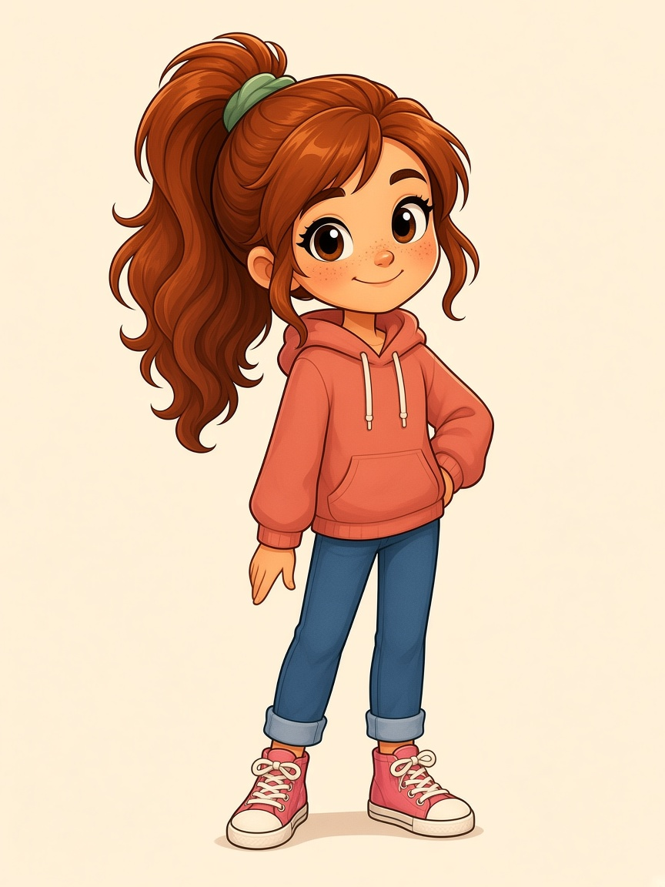
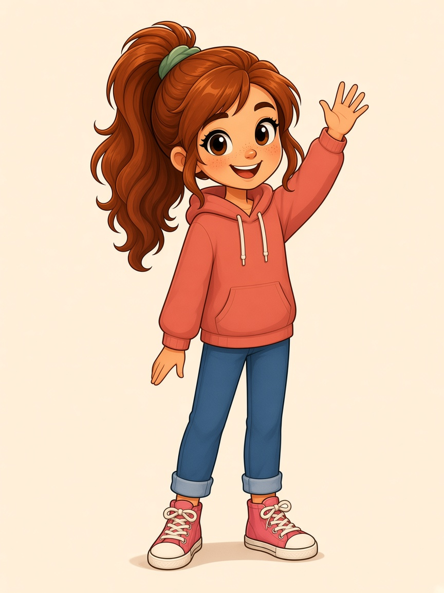
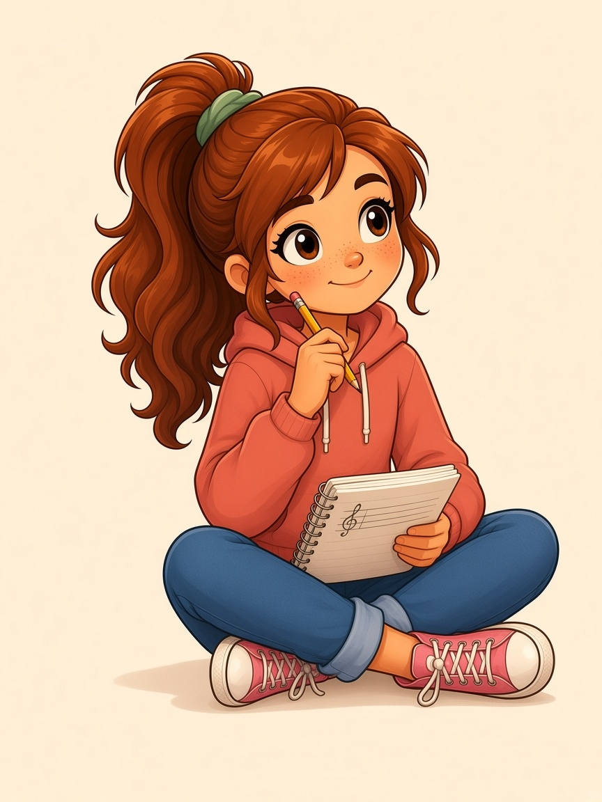
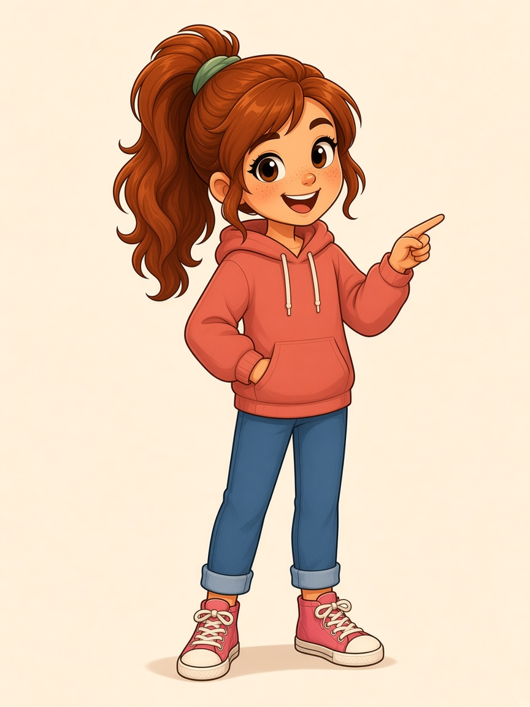
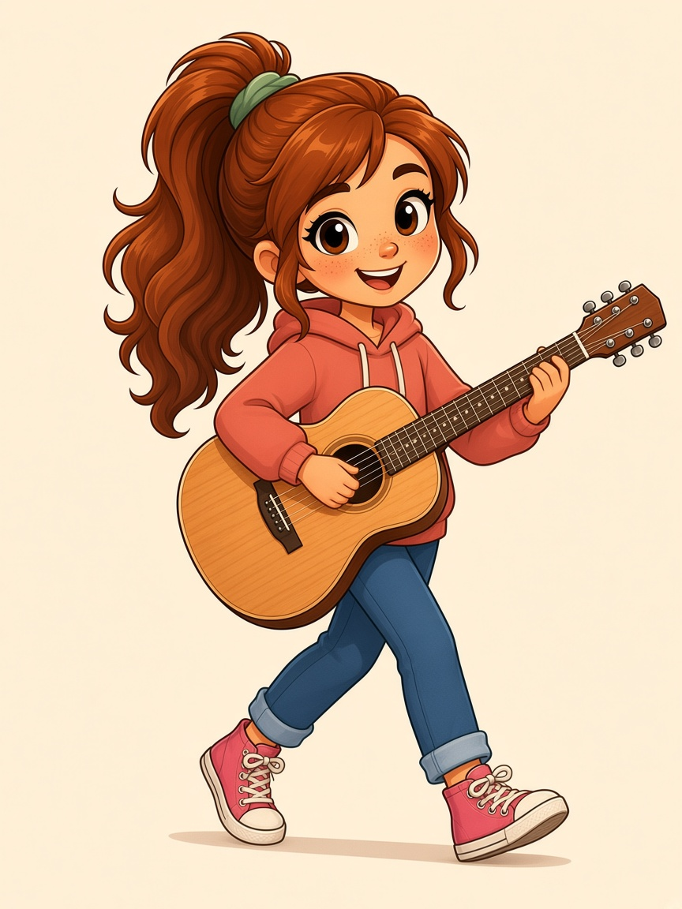
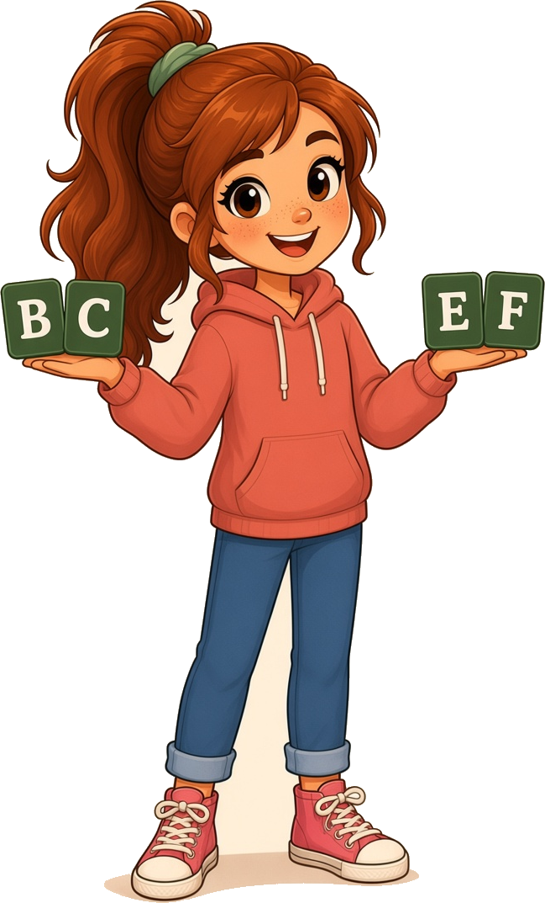

Rhythm Roots · Character kit
About 10. Fair skin, copper-red ponytail, freckles. Modern cartoon with soft shading — rebuilt from your samples, not the geometric version.

Clean dark-brown outlines, cel-shading, big eyes, high wavy ponytail with a sage scrunchie. Coral hoodie, cuffed jeans, pink high-tops.
Drop a pose PNG onto a cream handout. Keep her around 1.6–2.4 inches tall so type still leads.
idle, wave, pencil, point, guitar, neighbors. Same face and outfit in every pose.
More actions as we need them, then the boy in this same style.
Default standing

Hellos / intros

Write / think

Call out a diagram

Play / practice

B+C and E+F
Place the PNG on the page, cream-on-cream so the background disappears. If you need a new action, we generate it from this same model — hair, face, and clothes stay locked.